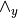
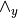
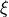

Structural Equation Models (SEM)¶
- class pgmpy.models.SEM.SEM(syntax, **kwargs)[source]¶
Class for representing Structural Equation Models. This class is a wrapper over SEMGraph and SEMAlg to provide a consistent API over the different representations.
- model¶
A graphical representation of the model.
- Type
SEMGraph instance
- classmethod from_RAM(variables, B, zeta, observed=None, wedge_y=None, fixed_values=None)[source]¶
Initializes a SEM instance using Reticular Action Model(RAM) notation. The model is defined as:
..math:
\mathbf{\eta} = \mathbf{B \eta} + \mathbf{\epsilon} \\ \mathbf{\y} = \wedge_y \mathbf{\eta} \zeta = COV(\mathbf{\epsilon})
where
 is the set of variables (both latent and observed),
is the set of variables (both latent and observed),
 are the error terms, is the set
of observed variables,  is a boolean array of the shape (no of
observed variables, no of total variables).
are the error terms, is the set
of observed variables,  is a boolean array of the shape (no of
observed variables, no of total variables).- Parameters
variables (list, array-like) – List of variables (both latent and observed) in the model.
B (2-D boolean array (shape: len(variables) x len(variables))) – The non-zero parameters in
 matrix. Refer model definition in docstring for details.
matrix. Refer model definition in docstring for details.zeta (2-D boolean array (shape: len(variables) x len(variables))) – The non-zero parameters in (error covariance) matrix. Refer model definition in docstring for details.
observed (list, array-like (optional: Either observed or wedge_y needs to be specified)) – List of observed variables in the model.
wedge_y (2-D array (shape: no. observed x total vars) (optional: Either observed or wedge_y)) – The matrix. Refer model definition in docstring for details.
fixed_values (dict (optional)) – If specified, fixes the parameter values and are not changed during estimation. A dict with the keys B, zeta.
- Returns
pgmpy.models.SEM instance
- Return type
An instance of the object with initialized values.
Examples
>>> from pgmpy.models import SEM >>> SEM.from_RAM # TODO: Finish this
- classmethod from_graph(ebunch, latents=[], err_corr=[], err_var={})[source]¶
Initializes a SEM instance using graphical structure.
- Parameters
ebunch (list/array-like) –
- List of edges in form of tuples. Each tuple can be of two possible shape:
- (u, v): This would add an edge from u to v without setting any parameter
for the edge.
- (u, v, parameter): This would add an edge from u to v and set the edge’s
parameter to parameter.
latents (list/array-like) – List of nodes which are latent. All other variables are considered observed.
err_corr (list/array-like) –
- List of tuples representing edges between error terms. It can be of the following forms:
- (u, v): Add correlation between error terms of u and v. Doesn’t set any variance or
covariance values.
- (u, v, covar): Adds correlation between the error terms of u and v and sets the
parameter to covar.
err_var (dict) – Dict of the form (var: variance).
Examples
Defining a model (Union sentiment model[1]) without setting any paramaters. >>> from pgmpy.models import SEM >>> sem = SEM.from_graph(ebunch=[(‘deferenc’, ‘unionsen’), (‘laboract’, ‘unionsen’), … (‘yrsmill’, ‘unionsen’), (‘age’, ‘deferenc’), … (‘age’, ‘laboract’), (‘deferenc’, ‘laboract’)], … latents=[], … err_corr=[(‘yrsmill’, ‘age’)], … err_var={})
Defining a model (Education [2]) with all the parameters set. For not setting any parameter np.NaN can be explicitly passed. >>> sem_edu = SEM.from_graph(ebunch=[(‘intelligence’, ‘academic’, 0.8), (‘intelligence’, ‘scale_1’, 0.7), … (‘intelligence’, ‘scale_2’, 0.64), (‘intelligence’, ‘scale_3’, 0.73), … (‘intelligence’, ‘scale_4’, 0.82), (‘academic’, ‘SAT_score’, 0.98), … (‘academic’, ‘High_school_gpa’, 0.75), (‘academic’, ‘ACT_score’, 0.87)], … latents=[‘intelligence’, ‘academic’], … err_corr=[], … err_var={})
References
- [1] McDonald, A, J., & Clelland, D. A. (1984). Textile Workers and Union Sentiment.
Social Forces, 63(2), 502–521
- [2] https://en.wikipedia.org/wiki/Structural_equation_modeling#/
- classmethod from_lavaan(string=None, filename=None)[source]¶
Initializes a SEM instance using lavaan syntax.
- Parameters
string (str (default: None)) – A lavaan style multiline set of regression equation representing the model. Refer http://lavaan.ugent.be/tutorial/syntax1.html for details.
filename (str (default: None)) – The filename of the file containing the model in lavaan syntax.
Examples
- classmethod from_lisrel(var_names, params, fixed_masks=None)[source]¶
Initializes a SEM instance using LISREL notation. The LISREL notation is defined as: ..math:
\mathbf{\eta} = \mathbf{B \eta} + \mathbf{\Gamma \xi} + mathbf{\zeta} \\ \mathbf{y} = \mathbf{\wedge_y \eta} + \mathbf{\epsilon} \\ \mathbf{x} = \mathbf{\wedge_x \xi} + \mathbf{\delta}
where
is the set of endogenous variables, 
is the set of exogeneous variables, and  are the
set of measurement variables for and
respectively.
are the
set of measurement variables for and
respectively.  , , and
, , and  are the error terms for , , and
respectively.
are the error terms for , , and
respectively.- Parameters
str_model (str (default: None)) –
A lavaan style multiline set of regression equation representing the model. Refer http://lavaan.ugent.be/tutorial/syntax1.html for details.
If None requires var_names and params to be specified.
var_names (dict (default: None)) – A dict with the keys: eta, xi, y, and x. Each keys should have a list as the value with the name of variables.
params (dict (default: None)) –
A dict of LISREL representation non-zero parameters. Must contain the following keys: B, gamma, wedge_y, wedge_x, phi, theta_e, theta_del, and psi.
If None str_model must be specified.
fixed_params (dict (default: None)) –
A dict of fixed values for parameters. The shape of the parameters should be same as params.
If None all the parameters are learnable.
- Returns
pgmpy.models.SEM instance
- Return type
An instance of the object with initalized values.
Examples
>>> from pgmpy.models import SEMAlg # TODO: Finish this example
{kind=link}
- class pgmpy.models.SEM.SEMAlg(eta=None, B=None, zeta=None, wedge_y=None, fixed_values=None)[source]¶
Base class for algebraic representation of Structural Equation Models(SEMs). The model is represented using the Reticular Action Model (RAM).
- generate_samples(n_samples=100)[source]¶
Generates random samples from the model.
- Parameters
n_samples (int) – The number of samples to generate.
- Returns
pd.DataFrame
- Return type
The genrated samples.
- class pgmpy.models.SEM.SEMGraph(ebunch=[], latents=[], err_corr=[], err_var={})[source]¶
Base class for graphical representation of Structural Equation Models(SEMs).
All variables are by default assumed to have an associated error latent variable, therefore doesn’t need to be specified.
- graph¶
The graphical structure of the latent and observed variables except the error terms. The parameteers are stored in the weight attribute of each edge.
- Type
nx.DirectedGraph
- err_graph¶
An undirected graph representing the relations between the error terms of the model. The node of the graph has the same name as the variable but represents the error terms. The variance is stored in the weight attribute of the node and the covariance is stored in the weight attribute of the edge.
- Type
nx.Graph
- full_graph_struct¶
Represents the full graph structure. The names of error terms starts with . and new nodes are added for each correlation which starts with ...
- Type
nx.DiGraph
- active_trail_nodes(variables, observed=[], avoid_nodes=[], struct='full')[source]¶
Finds all the observed variables which are d-connected to variables in the graph_struct when observed variables are observed.
- Parameters
variables (str or array like) – Observed variables whose d-connected variables are to be found.
observed (list/array-like) – If given the active trails would be computed assuming these nodes to be observed.
avoid_nodes (list/array-like) – If specificed, the algorithm doesn’t account for paths that have influence flowing through the avoid node.
struct (str or nx.DiGraph instance) – If “full”, considers correlation between error terms for computing d-connection. If “non_error”, doesn’t condised error correlations for computing d-connection. If instance of nx.DiGraph, finds d-connected variables on the given graph.
Examples
>>> from pgmpy.models import SEM >>> model = SEMGraph(ebunch=[('yrsmill', 'unionsen'), ('age', 'laboract'), ... ('age', 'deferenc'), ('deferenc', 'laboract'), ... ('deferenc', 'unionsen'), ('laboract', 'unionsen')], ... latents=[], ... err_corr=[('yrsmill', 'age')]) >>> model.active_trail_nodes('age')
- Returns
dict – Returns a dict with variables as the key and a list of d-connected variables as the value.
- Return type
{str: list}
References
Details of the algorithm can be found in ‘Probabilistic Graphical Model Principles and Techniques’ - Koller and Friedman Page 75 Algorithm 3.1
- get_conditional_ivs(X, Y, scaling_indicators={})[source]¶
Returns the conditional IVs for the relation X -> Y
- Parameters
X (node) – The observed variable’s name
Y (node) – The oberved variable’s name
scaling_indicators (dict (optional)) – A dict representing which observed variable to use as scaling indicator for the latent variables. If not provided, automatically finds scaling indicators by randomly selecting one of the measurement variables of each latent variable.
- Returns
set
- Return type
Set of 2-tuples representing tuple[0] is an IV for X -> Y given tuple[1]
References
- 1
Van Der Zander, B., Textor, J., & Liskiewicz, M. (2015, June). Efficiently finding conditional instruments for causal inference. In Twenty-Fourth International Joint Conference on Artificial Intelligence.
Examples
>>> from pgmpy.models import SEMGraph >>> model = SEMGraph(ebunch=[('I', 'X'), ('X', 'Y'), ('W', 'I')], ... latents=[], ... err_corr=[('W', 'Y')]) >>> model.get_ivs('X', 'Y') [('I', {'W'})]
- get_ivs(X, Y, scaling_indicators={})[source]¶
Returns the Instrumental variables(IVs) for the relation X -> Y
- Parameters
X (node) – The variable name (observed or latent)
Y (node) – The variable name (observed or latent)
scaling_indicators (dict (optional)) – A dict representing which observed variable to use as scaling indicator for the latent variables. If not given the method automatically selects one of the measurement variables at random as the scaling indicator.
- Returns
set – The set of Instrumental Variables for X -> Y.
- Return type
{str}
Examples
>>> from pgmpy.models import SEMGraph >>> model = SEMGraph(ebunch=[('I', 'X'), ('X', 'Y')], ... latents=[], ... err_corr=[('X', 'Y')]) >>> model.get_ivs('X', 'Y') {'I'}
- get_scaling_indicators()[source]¶
Returns a scaling indicator for each of the latent variables in the model. The scaling indicator is chosen randomly among the observed measurement variables of the latent variable.
Examples
>>> from pgmpy.models import SEMGraph >>> model = SEMGraph(ebunch=[('xi1', 'eta1'), ('xi1', 'x1'), ('xi1', 'x2'), ... ('eta1', 'y1'), ('eta1', 'y2')], ... latents=['xi1', 'eta1']) >>> model.get_scaling_indicators() {'xi1': 'x1', 'eta1': 'y1'}
- Returns
dict – scaling indicator.
- Return type
Returns a dict with latent variables as the key and their value being the
- moralize(graph='full')[source]¶
TODO: This needs to go to a parent class. Removes all the immoralities in the DirectedGraph and creates a moral graph (UndirectedGraph).
A v-structure X->Z<-Y is an immorality if there is no directed edge between X and Y.
- Parameters
graph –
Examples
- to_lisrel()[source]¶
Converts the model from a graphical representation to an equivalent algebraic representation. This converts the model into a Reticular Action Model (RAM) model representation which is implemented by pgmpy.models.SEMAlg class.
- Returns
SEMAlg instance
- Return type
Instance of SEMAlg representing the model.
Examples
>>> from pgmpy.models import SEM >>> sem = SEM.from_graph(ebunch=[('deferenc', 'unionsen'), ('laboract', 'unionsen'), ... ('yrsmill', 'unionsen'), ('age', 'deferenc'), ... ('age', 'laboract'), ('deferenc', 'laboract')], ... latents=[], ... err_corr=[('yrsmill', 'age')], ... err_var={}) >>> sem.to_lisrel() # TODO: Complete this.
See also
to_standard_lisrelConverts to the standard lisrel format and returns the parameters.
- to_standard_lisrel()[source]¶
Transforms the model to the standard LISREL representation of latent and measurement equations. The standard LISREL representation is given as:
- ..math::
mathbf{eta} = mathbf{B eta} + mathbf{Gamma xi} + mathbf{zeta} \ mathbf{y} = mathbf{wedge_y eta} + mathbf{epsilon} \ mathbf{x} = mathbf{wedge_x xi} + mathbf{delta} \ mathbf{Theta_e} = COV(mathbf{epsilon}) \ mathbf{Theta_delta} = COV(mathbf{delta}) \ mathbf{Psi} = COV(mathbf{eta}) \ mathbf{Phi} = COV(mathbf{xi}) \
Since the standard LISREL representation has restrictions on the types of model, this method adds extra latent variables with fixed loadings of 1 to make the model consistent with the restrictions.
- Returns
var_names (dict (keys: eta, xi, y, x)) – Returns the variable names in
, ,
, .params (dict (keys: B, gamma, wedge_y, wedge_x, theta_e, theta_del, phi, psi)) – Returns a boolean matrix for each of the parameters. A 1 in the matrix represents that there is an edge in the model, 0 represents there is no edge.
fixed_values (dict (keys: B, gamma, wedge_y, wedge_x, theta_e, theta_del, phi, psi)) – Returns a matrix for each of the parameters. A value in the matrix represents the set value for the parameter in the model else it is 0.
See also
to_lisrelConverts the model to pgmpy.models.SEMAlg instance.
Examples
TODO: Finish this.